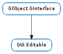

| Subclasses: | Gtk.Entry |
|---|
| copy_clipboard() | |
| cut_clipboard() | |
| delete_selection() | |
| delete_text(start_pos, end_pos) | |
| get_chars(start_pos, end_pos) | |
| get_editable() | |
| get_position() | |
| get_selection_bounds() | |
| insert_text(text, position) | |
| paste_clipboard() | |
| select_region(start_pos, end_pos) | |
| set_editable(is_editable) | |
| set_position(position) |
None
| Name | Parameters | Return | Description |
|---|---|---|---|
| changed | The ::changed signal is emitted at the end of a single user-visible operation on the contents of the Gtk.Editable. E.g., a paste operation that replaces the contents of the selection will cause only one signal emission (even though it is implemented by first deleting the selection, then inserting the new content, and may cause multiple ::notify::text signals to be emitted). | ||
| delete-text | int, int | This signal is emitted when text is deleted from the widget by the user. The default handler for this signal will normally be responsible for deleting the text, so by connecting to this signal and then stopping the signal with GObject.signal_stop_emission (), it is possible to modify the range of deleted text, or prevent it from being deleted entirely. The start_pos and end_pos parameters are interpreted as for Gtk.Editable.delete_text (). | |
| insert-text | str, int, int | This signal is emitted when text is inserted into the widget by the user. The default handler for this signal will normally be responsible for inserting the text, so by connecting to this signal and then stopping the signal with GObject.signal_stop_emission (), it is possible to modify the inserted text, or prevent it from being inserted entirely. |
Bases: GObject.GInterface
The Gtk.Editable interface is an interface which should be implemented by text editing widgets, such as Gtk.Entry and Gtk.SpinButton. It contains functions for generically manipulating an editable widget, a large number of action signals used for key bindings, and several signals that an application can connect to to modify the behavior of a widget.
As an example of the latter usage, by connecting the following handler to Gtk.Editable ::insert-text, an application can convert all entry into a widget into uppercase.
Forcing entry to uppercase.
#include <ctype.h>
void
insert_text_handler (GtkEditable &asteditable,
const gchar &asttext,
gint length,
gint &astposition,
gpointer data)
{
gchar &astresult = g_utf8_strup (text, length);
g_signal_handlers_block_by_func (editable,
(gpointer) insert_text_handler, data);
gtk_editable_insert_text (editable, result, length, position);
g_signal_handlers_unblock_by_func (editable,
(gpointer) insert_text_handler, data);
g_signal_stop_emission_by_name (editable, "insert_text");
g_free (result);
}
Copies the contents of the currently selected content in the editable and puts it on the clipboard.
Removes the contents of the currently selected content in the editable and puts it on the clipboard.
Deletes the currently selected text of the editable. This call doesn’t do anything if there is no selected text.
| Parameters: |
|---|
Deletes a sequence of characters. The characters that are deleted are those characters at positions from start_pos up to, but not including end_pos. If end_pos is negative, then the characters deleted are those from start_pos to the end of the text.
Note that the positions are specified in characters, not bytes.
| Parameters: | |
|---|---|
| Returns: | a pointer to the contents of the widget as a string. This string is allocated by the Gtk.Editable implementation and should be freed by the caller. |
| Return type: |
Retrieves a sequence of characters. The characters that are retrieved are those characters at positions from start_pos up to, but not including end_pos. If end_pos is negative, then the characters retrieved are those characters from start_pos to the end of the text.
Note that positions are specified in characters, not bytes.
| Returns: | True if editable is editable. |
|---|---|
| Return type: | bool |
Retrieves whether editable is editable. See Gtk.Editable.set_editable ().
| Returns: | the cursor position |
|---|---|
| Return type: | int |
Retrieves the current position of the cursor relative to the start of the content of the editable.
Note that this position is in characters, not in bytes.
| Returns: | True if an area is selected, False otherwise |
|---|---|
| Return type: | bool, start_pos: int, end_pos: int |
Retrieves the selection bound of the editable. start_pos will be filled with the start of the selection and end_pos with end. If no text was selected both will be identical and False will be returned.
Note that positions are specified in characters, not bytes.
| Parameters: | |
|---|---|
| Return type: | position: int |
Inserts new_text_length bytes of new_text into the contents of the widget, at position position.
Note that the position is in characters, not in bytes. The function updates position to point after the newly inserted text.
Pastes the content of the clipboard to the current position of the cursor in the editable.
| Parameters: |
|---|
Selects a region of text. The characters that are selected are those characters at positions from start_pos up to, but not including end_pos. If end_pos is negative, then the characters selected are those characters from start_pos to the end of the text.
Note that positions are specified in characters, not bytes.
| Parameters: | is_editable (bool) – True if the user is allowed to edit the text in the widget |
|---|
Determines if the user can edit the text in the editable widget or not.
| Parameters: | position (int) – the position of the cursor |
|---|
Sets the cursor position in the editable to the given value.
The cursor is displayed before the character with the given (base 0) index in the contents of the editable. The value must be less than or equal to the number of characters in the editable. A value of -1 indicates that the position should be set after the last character of the editable. Note that position is in characters, not in bytes.